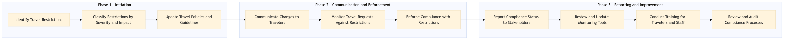

This process document outlines the steps for monitoring and enforcing travel restrictions within the Travel Management Company (TMC) domain, ensuring compliance with regulatory requirements.
| Trigger | Detection of new or updated travel restrictions by internal or external sources. |
| Outcome | Travel restrictions are accurately monitored, enforced, and communicated to relevant stakeholders, ensuring all travelers comply with regulations. |
| Systems | AWS SageMaker Snowflake Tableau Salesforce SAP Concur T2 SAP S/4HANA Cvent Email Marketing Tools SAP Concur Expense Amex GBT Neo/Complete SAP Analytics Cloud Workday Learning Management Systems (LMS) Internal Audit Tools |

Click to enlarge
| Step | Name & Pain Point | Role | System | Input | Output | KPI | Flags |
|---|---|---|---|---|---|---|---|
| 1.1 | Identify Travel Restrictions Handling large volumes of data efficiently | Duty of Care Analyst | AWS SageMaker, Snowflake | Internal and external data sources | List of new or updated travel restrictions | 100% accuracy in identifying restrictions | ◆ Decision |
| 1.2 | Classify Restrictions by Severity and Impact Consistent categorization criteria | Duty of Care Analyst | Tableau, Salesforce | List of travel restrictions | Categorized list of restrictions | 95% accuracy in classification | ⚠ Exception |
| 1.3 | Update Travel Policies and Guidelines Coordination with multiple departments | Policy Manager | SAP Concur T2, SAP S/4HANA | Categorized list of restrictions | Updated travel policies and guidelines | 100% policy update within 7 days | ⚠ Exception |
| 1.4 | Communicate Changes to Travelers Effective communication strategies | Communication Specialist | Cvent, Email Marketing Tools | Updated travel policies and guidelines | Notifications sent to travelers | 90% open rate of communication | ⚠ Exception |
| 1.5 | Monitor Travel Requests Against Restrictions Real-time processing of large volumes | Travel Request Processor | SAP Concur Expense, Amex GBT Neo/Complete | Travel requests and updated policies | List of non-compliant travel requests | 98% accuracy in request monitoring | ◆ Decision |
| 1.6 | Enforce Compliance with Restrictions Handling exceptions and appeals | Travel Request Processor | SAP Concur Expense, Amex GBT Neo/Complete | List of non-compliant travel requests | Compliance status updates for each request | 95% compliance rate within 24 hours | ⚠ Exception |
| 1.7 | Report Compliance Status to Stakeholders Data integration across systems | Compliance Officer | SAP Analytics Cloud, Workday | Compliance status updates | Compliance reports and dashboards | 100% report accuracy | ⚠ Exception |
| 1.8 | Review and Update Monitoring Tools Continuous tool optimization | IT Specialist | AWS SageMaker, Snowflake | Compliance reports and feedback | Updated monitoring tools and algorithms | 90% improvement in tool efficiency | ⚠ Exception |
| 1.9 | Conduct Training for Travelers and Staff Engaging diverse audiences | Training Coordinator | Learning Management Systems (LMS) | Updated policies and guidelines | Training sessions conducted | 85% participation rate in training | ⚠ Exception |
| 1.10 | Review and Audit Compliance Processes Resource allocation for audits | Audit Manager | Internal Audit Tools | Compliance reports and audit logs | Audit findings and recommendations | 95% adherence to compliance standards | ◆ Decision |